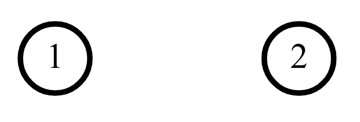
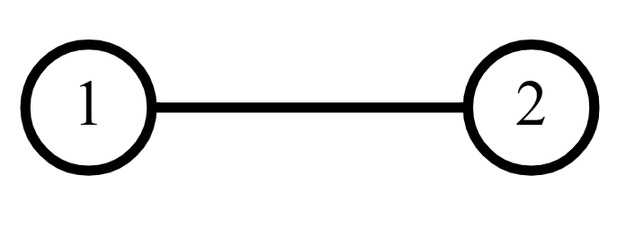
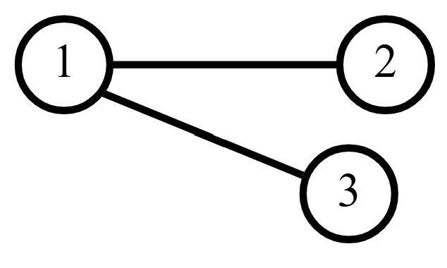
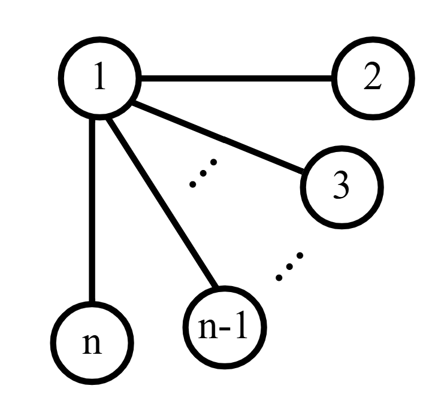
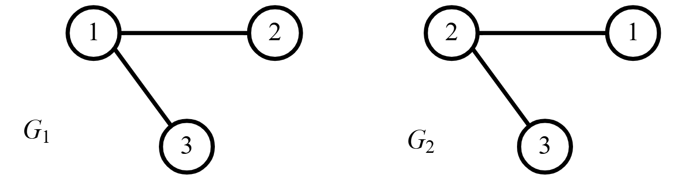
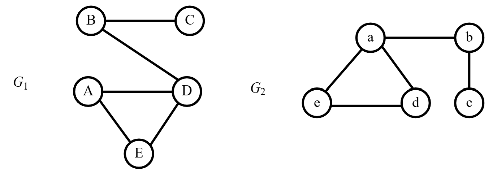
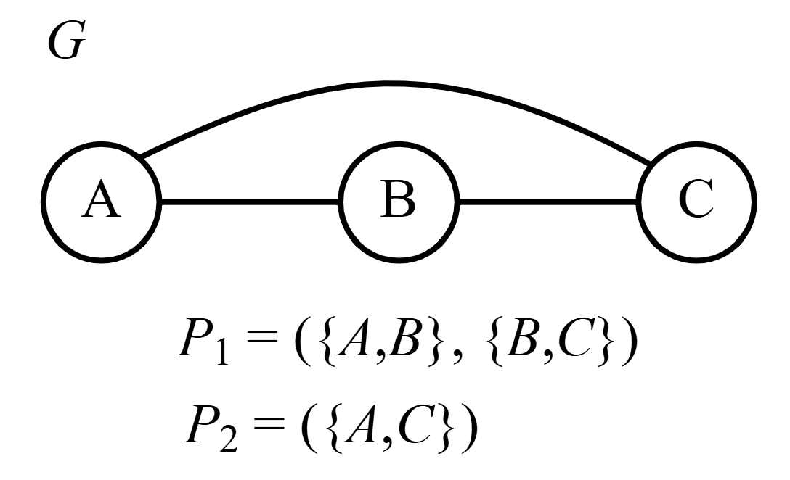
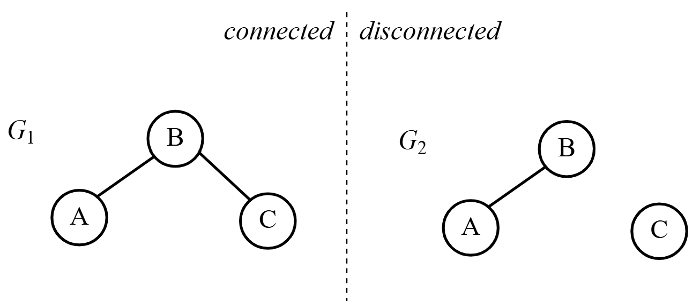

Lecture 3: Isomorphism and Connectedness#
Question 3
What is the maximum degree for a vertex in a simple graph on \(n\) vertices?
Answer
\(n-1\). Recall that simple means there are no self-loops and at most one edge between any pair of vertices.
We will walk through an example to maximize the degree of a vertex, 1. Consider the case when \(n=2\):
{kind=link}

Since self-loops are not allowed in a simple graph, we cannot make an edge between 1 and itself. Likewise with 2 and itself. We must add an edge between 1 and 2:
{kind=link}

Now that \(\{1,2\}\) is in the graph, we cannot add another edge between 1 and 2 otherwise the graph will not be simple. So, the maximum degree when \(n=2\) is 1.
Considering \(n=3\):
{kind=link}

Again, we cannot add any more edges between 1 and the other vertices. Likewise, we cannot add edges between the vertices and themselves. So, the maximum degree when \(n=3\) is 2.
Think about what is going on:
{kind=link}

We are adding an edge between one vertex and all of the other vertices in the graph. There are \(n-1\) other vertices when we consider a given vertex. So, the maximum degree for this vertex in a simple graph is \(n-1\).
Isomorphisms#
Consider the following graphs. While the edge set of the graph on the left is different form the edge set of the graph on the right, the graphs are essentially the same. The only difference is the labelling. This motivates the concept of an isomorphism in graph theory.
{kind=link}

Fig. 8 Two graphs, \(G_1\) and \(G_2\), that are structurally the same if we ignore vertex labels.#
Definition 13 (Isomorphic)
Let \(G_1=(V_1,E_1)\) and \(G_2=(V_2,E_2)\). We say \(G_1\) is isomorphic to \(G_2\) if there exists a bijection \(\psi:V_1\to V_2\) such that \(\{u,v\}\in E_1\) if and only if \(\{\psi(u), \psi(v)\}\in E_2\). We write \(G_1\cong G_2\) in this case.
Really, drawing your own isomorphic graphs is straightforward: draw the same graph, but change the labels. For example, the following graphs from class.
{kind=link}

Notice, we did not change anything about the structure of the graph. Merely the labels. If \(G_1=(V_1,E_1)\) and \(G_2=(V_2,E_2)\), then the following function \(f:V_1\to V_2\) is an isomorphism between \(G_1\) and \(G_2\):
\(f(A)=e\)
\(f(B)=b\)
\(f(C)=c\)
\(f(D)=a\)
\(f(E)=d\)
This functions simply changes the labels. Keep that in mind when trying to prove the following.
Theorem 2
Let \(G_1=(V_1,E_1)\) and \(G_2=(V_2,E_2)\) be graphs. If \(G_1\cong G_2\) with some isomorphism \(\psi:V_1\to V_2\), then
\(|V_1|=|V_2|\)
\(|E_1|=|E_2|\)
If \(v\in V_1\) such that \(\psi(v)=v'\in V_2\), then \(d_{G_1}(v)=d_{G_2}(v')\).
Proof. The first two are homework problems!
To prove the last, consider what the isomorphism \(\psi:V_1\to V_2\) does to edges containing a vertex \(v\in V_1\). By the definition of isomorphism, \(\{v,u\}\) exists in \(E_1\) if and only if \(\{\psi(v), \psi(u)\}\) exists in \(E_2\). Since \(\psi\) is a bijection, the vertices \(v\) and \(u\) in some edge \(\{v,u\}\in E_1\) get mapped uniquely to vertices \(\psi(v)\) and \(\psi(u)\) in some edge \(\{\psi(v),\psi(u)\}\in E_2\). So, the edge \(\{v,u\}\in E_1\) also gets mapped uniquely to an edge \(\{\psi(v),\psi(u)\}\in E_2\). Therefore, the number of times \(v\in V_1\) appears as an endpoint in \(G_1\) , \(d_{G_1}(v)\) , equals the number of times \(\psi(v)\in V_2\) appears as an endpoint in \(G_2\) , \(d_{G_2}(\psi(v))\).
Paths & Connectedness#
Definition 14 (Path)
A sequence of edges \(P=(\{v_1,v_2\}, \{v_2,v_3\}, \dots, \{v_{m-1},v_m\})\) containing a sequence of distinct vertices \(V_P=(v_1, v_2, \dots, v_m)\) such that each vertex \(v_i\in V_P\) appears as an endpoint in at most two edges of \(P\). We call \(v_1\in V_P\) the starting vertex and \(v_m\in V_P\) the ending vertex.
{kind=link}

Fig. 9 Two examples of paths between vertices \(A\) and \(C\). The difference being \(V_{P_1}=(A,B,C)\) while \(V_{P_2}=(A,C)\).#
Definition 15 (Connectedness)
A graph is connected if there is a path between every pair of distinct vertices.
Take, for example, the following graphs. On one, there is a path between all the vertices in the graph. On the other, there is a piece of the graph that cannot be reached by a path.
{kind=link}

Fig. 10 Connected vs. disconnected#